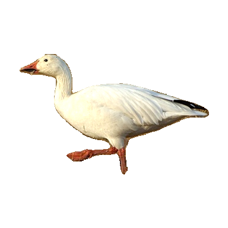

Query 1: brightness_plus_10

Current Full
#1 Total 0.560
Total 0.560
Color 0.742 · Texture 0.658 · Shape 0.350
Total 0.560Color 0.742 · Texture 0.658 · Shape 0.350
#2 Total 0.515
Total 0.515
Color 0.817 · Texture 0.686 · Shape 0.160
Total 0.515Color 0.817 · Texture 0.686 · Shape 0.160
#3 Total 0.514
Total 0.514
Color 0.609 · Texture 0.593 · Shape 0.384
Total 0.514Color 0.609 · Texture 0.593 · Shape 0.384
#4 Total 0.514
Total 0.514
Color 0.733 · Texture 0.434 · Shape 0.409
Total 0.514Color 0.733 · Texture 0.434 · Shape 0.409
#5 Total 0.513
Total 0.513
Color 0.702 · Texture 0.608 · Shape 0.299
Total 0.513Color 0.702 · Texture 0.608 · Shape 0.299
#6 Total 0.512
Total 0.512
Color 0.698 · Texture 0.543 · Shape 0.349
Total 0.512Color 0.698 · Texture 0.543 · Shape 0.349
#7 Total 0.505
Total 0.505
Color 0.633 · Texture 0.472 · Shape 0.435
Total 0.505Color 0.633 · Texture 0.472 · Shape 0.435
#8 Total 0.505
Total 0.505
Color 0.731 · Texture 0.430 · Shape 0.391
Total 0.505Color 0.731 · Texture 0.430 · Shape 0.391
#9 Total 0.503
Total 0.503
Color 0.717 · Texture 0.490 · Shape 0.351
Total 0.503Color 0.717 · Texture 0.490 · Shape 0.351
#10 Total 0.499
Total 0.499
Color 0.651 · Texture 0.447 · Shape 0.423
Total 0.499Color 0.651 · Texture 0.447 · Shape 0.423
Current Full - LBP
#1Total 0.560
Color 0.742 · Texture 0.658 · Shape 0.350
Total 0.560Color 0.742 · Texture 0.658 · Shape 0.350
#2Total 0.515
Color 0.817 · Texture 0.686 · Shape 0.160
Total 0.515Color 0.817 · Texture 0.686 · Shape 0.160
#3Total 0.514
Color 0.609 · Texture 0.594 · Shape 0.384
Total 0.514Color 0.609 · Texture 0.594 · Shape 0.384
#4Total 0.514
Color 0.733 · Texture 0.434 · Shape 0.409
Total 0.514Color 0.733 · Texture 0.434 · Shape 0.409
#5Total 0.513
Color 0.702 · Texture 0.608 · Shape 0.299
Total 0.513Color 0.702 · Texture 0.608 · Shape 0.299
#6Total 0.512
Color 0.698 · Texture 0.543 · Shape 0.349
Total 0.512Color 0.698 · Texture 0.543 · Shape 0.349
#7Total 0.505
Color 0.633 · Texture 0.472 · Shape 0.435
Total 0.505Color 0.633 · Texture 0.472 · Shape 0.435
#8Total 0.505
Color 0.731 · Texture 0.430 · Shape 0.391
Total 0.505Color 0.731 · Texture 0.430 · Shape 0.391
#9Total 0.503
Color 0.717 · Texture 0.490 · Shape 0.351
Total 0.503Color 0.717 · Texture 0.490 · Shape 0.351
#10Total 0.499
Color 0.651 · Texture 0.447 · Shape 0.423
Total 0.499Color 0.651 · Texture 0.447 · Shape 0.423
Current Full + Hu 0.10
#1Total 0.555
Color 0.742 · Texture 0.658 · Shape 0.338
Total 0.555Color 0.742 · Texture 0.658 · Shape 0.338
#2Total 0.524
Color 0.817 · Texture 0.686 · Shape 0.184
Total 0.524Color 0.817 · Texture 0.686 · Shape 0.184
#3Total 0.522
Color 0.698 · Texture 0.543 · Shape 0.374
Total 0.522Color 0.698 · Texture 0.543 · Shape 0.374
#4Total 0.514
Color 0.702 · Texture 0.608 · Shape 0.302
Total 0.514Color 0.702 · Texture 0.608 · Shape 0.302
#5Total 0.510
Color 0.609 · Texture 0.593 · Shape 0.375
Total 0.510Color 0.609 · Texture 0.593 · Shape 0.375
#6Total 0.507
Color 0.733 · Texture 0.434 · Shape 0.392
Total 0.507Color 0.733 · Texture 0.434 · Shape 0.392
#7 Total 0.504
Total 0.504
Color 0.784 · Texture 0.640 · Shape 0.192
Total 0.504Color 0.784 · Texture 0.640 · Shape 0.192
#8Total 0.503
Color 0.717 · Texture 0.490 · Shape 0.352
Total 0.503Color 0.717 · Texture 0.490 · Shape 0.352
#9Total 0.502
Color 0.633 · Texture 0.472 · Shape 0.427
Total 0.502Color 0.633 · Texture 0.472 · Shape 0.427
#10Total 0.499
Color 0.731 · Texture 0.430 · Shape 0.377
Total 0.499Color 0.731 · Texture 0.430 · Shape 0.377
Replace LBP with Spatial MS-LBP
#1Total 0.560
Color 0.742 · Texture 0.658 · Shape 0.350
Total 0.560Color 0.742 · Texture 0.658 · Shape 0.350
#2Total 0.515
Color 0.817 · Texture 0.686 · Shape 0.160
Total 0.515Color 0.817 · Texture 0.686 · Shape 0.160
#3Total 0.514
Color 0.609 · Texture 0.593 · Shape 0.384
Total 0.514Color 0.609 · Texture 0.593 · Shape 0.384
#4Total 0.514
Color 0.733 · Texture 0.434 · Shape 0.409
Total 0.514Color 0.733 · Texture 0.434 · Shape 0.409
#5Total 0.512
Color 0.702 · Texture 0.608 · Shape 0.299
Total 0.512Color 0.702 · Texture 0.608 · Shape 0.299
#6Total 0.512
Color 0.698 · Texture 0.543 · Shape 0.349
Total 0.512Color 0.698 · Texture 0.543 · Shape 0.349
#7Total 0.505
Color 0.633 · Texture 0.472 · Shape 0.435
Total 0.505Color 0.633 · Texture 0.472 · Shape 0.435
#8Total 0.505
Color 0.731 · Texture 0.430 · Shape 0.391
Total 0.505Color 0.731 · Texture 0.430 · Shape 0.391
#9Total 0.503
Color 0.717 · Texture 0.490 · Shape 0.351
Total 0.503Color 0.717 · Texture 0.490 · Shape 0.351
#10Total 0.499
Color 0.651 · Texture 0.447 · Shape 0.423
Total 0.499Color 0.651 · Texture 0.447 · Shape 0.423
Spatial MS-LBP + Hu 0.10
#1Total 0.555
Color 0.742 · Texture 0.658 · Shape 0.338
Total 0.555Color 0.742 · Texture 0.658 · Shape 0.338
#2Total 0.525
Color 0.817 · Texture 0.686 · Shape 0.184
Total 0.525Color 0.817 · Texture 0.686 · Shape 0.184
#3Total 0.522
Color 0.698 · Texture 0.543 · Shape 0.374
Total 0.522Color 0.698 · Texture 0.543 · Shape 0.374
#4Total 0.514
Color 0.702 · Texture 0.608 · Shape 0.302
Total 0.514Color 0.702 · Texture 0.608 · Shape 0.302
#5Total 0.511
Color 0.609 · Texture 0.593 · Shape 0.375
Total 0.511Color 0.609 · Texture 0.593 · Shape 0.375
#6Total 0.507
Color 0.733 · Texture 0.434 · Shape 0.392
Total 0.507Color 0.733 · Texture 0.434 · Shape 0.392
#7Total 0.504
Color 0.784 · Texture 0.640 · Shape 0.192
Total 0.504Color 0.784 · Texture 0.640 · Shape 0.192
#8Total 0.503
Color 0.717 · Texture 0.490 · Shape 0.352
Total 0.503Color 0.717 · Texture 0.490 · Shape 0.352
#9Total 0.502
Color 0.633 · Texture 0.472 · Shape 0.427
Total 0.502Color 0.633 · Texture 0.472 · Shape 0.427
#10Total 0.499
Color 0.731 · Texture 0.430 · Shape 0.377
Total 0.499Color 0.731 · Texture 0.430 · Shape 0.377
 Total 0.668
Total 0.668 Total 0.659
Total 0.659 Total 0.623
Total 0.623 Total 0.609
Total 0.609 Total 0.597
Total 0.597 Total 0.590
Total 0.590 Total 0.584
Total 0.584 Total 0.584
Total 0.584 Total 0.583
Total 0.583 Total 0.582
Total 0.582 Total 0.590
Total 0.590 Total 0.586
Total 0.586 Total 0.582
Total 0.582 Total 0.581
Total 0.581 Total 0.567
Total 0.567 Total 0.557
Total 0.557 Total 0.537
Total 0.537 Total 0.521
Total 0.521 Total 0.519
Total 0.519 Total 0.518
Total 0.518 Total 0.516
Total 0.516 Total 0.511
Total 0.511 Total 0.510
Total 0.510 Total 0.502
Total 0.502 Total 0.616
Total 0.616 Total 0.560
Total 0.560 Total 0.551
Total 0.551 Total 0.533
Total 0.533 Total 0.532
Total 0.532 Total 0.528
Total 0.528 Total 0.524
Total 0.524 Total 0.524
Total 0.524 Total 0.523
Total 0.523 Total 0.530
Total 0.530 Total 0.528
Total 0.528 Total 0.592
Total 0.592 Total 0.580
Total 0.580 Total 0.577
Total 0.577 Total 0.572
Total 0.572 Total 0.570
Total 0.570 Total 0.565
Total 0.565 Total 0.560
Total 0.560 Total 0.558
Total 0.558 Total 0.556
Total 0.556 Total 0.557
Total 0.557 Total 0.556
Total 0.556 Total 0.513
Total 0.513 Total 0.486
Total 0.486 Total 0.479
Total 0.479 Total 0.476
Total 0.476 Total 0.473
Total 0.473 Total 0.471
Total 0.471 Total 0.471
Total 0.471 Total 0.464
Total 0.464 Total 0.451
Total 0.451 Total 0.469
Total 0.469 Total 0.465
Total 0.465